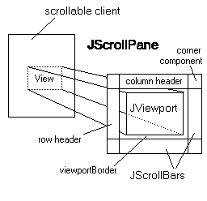

public class JScrollPane extends JComponent implements ScrollPaneConstants, Accessible
JScrollPane管理视图中，选择垂直和水平滚动条，和可选的行和列标题视口。你可以找到
JScrollPane在
How to Use Scroll Panes面向任务的文档，java教程中的一部分。注意，
JScrollPane不支持重量级组件。
|  |
JViewport提供了一个窗口，或“视口”到一个数据源，例如，一个文本文件。数据源是“滚动”客户端（又名数据模型）的
JViewport视图显示。一个
JScrollPane基本上由
JScrollBars，一
JViewport，以及它们之间的接线，如图所示在右。
除了滚动条和窗口，一个JScrollPane可以有一个列标题和行标题。这些都是JViewport对象，你指定setRowHeaderView，和setColumnHeaderView。列标题视图自动滚动，左和右，跟踪主视图的左右滚动。（然而，它从来没有垂直滚动）行标题的行为在一个类似的方式。
在两个滚动条满足，行头满足列头，或一个滚动条满足一个标题，这两个组件停止的角落，留下一个矩形的空间，默认情况下，空。这些空间可以潜在地存在于任何数量的四个角落里。在以前的图表中，右上方的空间是存在并确定的标签“角落成分”。
任何数量的空格，可以使用setCorner方法添加一个组件到一个特定的角落取代。（注：相同的组件不能被添加到多个角落）这是有用的，如果有一些额外的装饰或功能，你想添加到滚动窗格。每个角落组件的大小是由环绕它的标题和/或滚动条的大小决定的。
角落的组成部分，只会是可见的，如果有一个空的空间，它在角落里存在。例如，考虑一个组件设置为具有列标题的滚动窗格的右上角的一个组件。如果滚动窗格的垂直滚动条是不存在的，也许是因为视图组件还没有长大到需要它，然后角组件将不显示（因为没有空的空间，在角落的标题和垂直滚动条会创建）。把滚动条总是显示，使用setVerticalScrollBarPolicy(VERTICAL_SCROLLBAR_ALWAYS)，将确保对部件的空间总是存在的。
添加在主视图的边界，你可以使用setViewportBorder。（当然，你也可以添加在使用setBorder。整个滚动窗格边框）
一个常见的手术要做的是设置背景颜色，如果将主视图视图是小于视口，或是透明的。这可以通过设置视图的背景颜色，通过scrollPane.getViewport().setBackground()。之所以设置视口的颜色而不是滚动窗格，默认情况下JViewport是不透明的，在其他事情上，意味着它将完全填补其背景使用背景颜色。因此，当JScrollPane绘制背景视图通常会吸引过来的。
默认情况下JScrollPane使用ScrollPaneLayout处理其子组件的布局。ScrollPaneLayout确定大小的方式有两种使视口的视图：
Scrollable结合getPreferredScrollableViewportSize，getScrollableTracksViewportWidth和getScrollableTracksViewportHeightis使用，否则getPreferredSize使用。警告： Swing是线程不安全的。更多信息见Swing's Threading Policy。
警告：序列化该类的对象与以后的Swing版本不兼容。当前的序列化支持适用于短期贮藏或RMI运行相同Swing版本的应用程序之间。为1.4，为所有JavaBeans™长期存储的支持已被添加到java.beans包。请看XMLEncoder。
| Modifier and Type | Class and Description |
|---|---|
protected class |
JScrollPane.AccessibleJScrollPane
这个类实现了对
JScrollPane类可访问性支持。
|
protected class |
JScrollPane.ScrollBar
默认情况下
JScrollPane创建滚动条，这个类的实例。
|
JComponent.AccessibleJComponentContainer.AccessibleAWTContainerComponent.AccessibleAWTComponent, Component.BaselineResizeBehavior, Component.BltBufferStrategy, Component.FlipBufferStrategy| Modifier and Type | Field and Description |
|---|---|
protected JViewport |
columnHeader
列头子。
|
protected JScrollBar |
horizontalScrollBar
水平滚动条的滚动窗格的孩子。
|
protected int |
horizontalScrollBarPolicy
在水平滚动条的显示策略。
|
protected Component |
lowerLeft
该组件显示在左下角。
|
protected Component |
lowerRight
组件显示在右下角。
|
protected JViewport |
rowHeader
行头子。
|
protected Component |
upperLeft
该组件显示在左上角。
|
protected Component |
upperRight
组件显示在右上角。
|
protected JScrollBar |
verticalScrollBar
垂直滚动条的滚动窗格的孩子。
|
protected int |
verticalScrollBarPolicy
对于垂直滚动条的显示策略。
|
protected JViewport |
viewport
的滚动窗格的视口的孩子。
|
listenerList, TOOL_TIP_TEXT_KEY, ui, UNDEFINED_CONDITION, WHEN_ANCESTOR_OF_FOCUSED_COMPONENT, WHEN_FOCUSED, WHEN_IN_FOCUSED_WINDOWaccessibleContext, BOTTOM_ALIGNMENT, CENTER_ALIGNMENT, LEFT_ALIGNMENT, RIGHT_ALIGNMENT, TOP_ALIGNMENTCOLUMN_HEADER, HORIZONTAL_SCROLLBAR, HORIZONTAL_SCROLLBAR_ALWAYS, HORIZONTAL_SCROLLBAR_AS_NEEDED, HORIZONTAL_SCROLLBAR_NEVER, HORIZONTAL_SCROLLBAR_POLICY, LOWER_LEADING_CORNER, LOWER_LEFT_CORNER, LOWER_RIGHT_CORNER, LOWER_TRAILING_CORNER, ROW_HEADER, UPPER_LEADING_CORNER, UPPER_LEFT_CORNER, UPPER_RIGHT_CORNER, UPPER_TRAILING_CORNER, VERTICAL_SCROLLBAR, VERTICAL_SCROLLBAR_ALWAYS, VERTICAL_SCROLLBAR_AS_NEEDED, VERTICAL_SCROLLBAR_NEVER, VERTICAL_SCROLLBAR_POLICY, VIEWPORTABORT, ALLBITS, ERROR, FRAMEBITS, HEIGHT, PROPERTIES, SOMEBITS, WIDTH| Constructor and Description |
|---|
JScrollPane()
创建一个空的（没有视口的视图）
JScrollPane在水平和垂直滚动条均出现在需要的时候。
|
JScrollPane(Component view)
创建一个
JScrollPane，显示指定组件的内容，在垂直和水平两个每当组件的内容大于视图滚动条出现。
|
JScrollPane(Component view, int vsbPolicy, int hsbPolicy)
创建一个
JScrollPane显示在视口中的视图的位置可以用一对滚动条控制视图组件。
|
JScrollPane(int vsbPolicy, int hsbPolicy)
创建一个空的（没有视口的视图）指定滚动条政策
JScrollPane。
|
| Modifier and Type | Method and Description |
|---|---|
JScrollBar |
createHorizontalScrollBar()
返回一个默认的
JScrollPane.ScrollBar。
|
JScrollBar |
createVerticalScrollBar()
返回一个默认的
JScrollPane.ScrollBar。
|
protected JViewport |
createViewport()
返回默认的一个新的
JViewport。
|
AccessibleContext |
getAccessibleContext()
获取与此相关的accessiblecontext JScrollPane。
|
JViewport |
getColumnHeader()
返回列标题。
|
Component |
getCorner(String key)
返回指定的角落的组件。
|
JScrollBar |
getHorizontalScrollBar()
收益水平滚动条控件的视图的水平显示位置。
|
int |
getHorizontalScrollBarPolicy()
返回水平滚动条策略值。
|
JViewport |
getRowHeader()
返回行标题。
|
ScrollPaneUI |
getUI()
返回呈现此组件的外观和感觉（L和F）对象。
|
String |
getUIClassID()
返回用于构建用于渲染此组件的“L”类的名称的后缀。
|
JScrollBar |
getVerticalScrollBar()
返回垂直滚动条控件的视图俯视图位置。
|
int |
getVerticalScrollBarPolicy()
返回垂直滚动条策略值。
|
JViewport |
getViewport()
返回当前
JViewport。
|
Border |
getViewportBorder()
返回
Border对象周围的视口。
|
Rectangle |
getViewportBorderBounds()
返回该视口边框的界限。
|
boolean |
isValidateRoot()
重写返回true，什么叫
revalidate任何后裔，这
JScrollPane会造成这
JScrollPane整个树开始被验证。
|
boolean |
isWheelScrollingEnabled()
指示是否滚动将发生响应鼠标滚轮。
|
protected String |
paramString()
返回该
JScrollPane字符串表示形式。
|
void |
setColumnHeader(JViewport columnHeader)
除去旧的菜单，如果它真的存在；如果新的菜单不
null，同步的viewposition x坐标与视图（如果有），然后将其添加到滚动窗格。
|
void |
setColumnHeaderView(Component view)
创建一个列标题的视口，如果必要的话，设置它的视图，然后添加列标题的滚动窗格视图。
|
void |
setComponentOrientation(ComponentOrientation co)
设置垂直和水平滚动条的
ComponentOrientation参数确定的方向。
|
void |
setCorner(String key, Component corner)
增加了一个孩子，会出现在一个滚动窗格的角落，如果有房间。
|
void |
setHorizontalScrollBar(JScrollBar horizontalScrollBar)
增加了控制视口的视图位置水平滚动条的滚动窗格。
|
void |
setHorizontalScrollBarPolicy(int policy)
确定在水平滚动条出现在滚动窗格。
|
void |
setLayout(LayoutManager layout)
设置此
JScrollPane布局管理器。
|
void |
setRowHeader(JViewport rowHeader)
除去旧的rowheader，如果它真的存在；如果新rowheader不是
null，同步的viewposition Y坐标与视图（如果有），然后将其添加到滚动窗格。
|
void |
setRowHeaderView(Component view)
创建一个行标题视口，如果必要的话，设置它的视图，然后添加列标题的滚动窗格视图。
|
void |
setUI(ScrollPaneUI ui)
集
ScrollPaneUI对象提供的外观和感觉（L和F）这个组件。
|
void |
setVerticalScrollBar(JScrollBar verticalScrollBar)
添加控件的视图视图位置垂直滚动条的滚动窗格。
|
void |
setVerticalScrollBarPolicy(int policy)
确定在垂直滚动条的滚动窗格中出现。
|
void |
setViewport(JViewport viewport)
除去旧的视图（如果有）；军队的新视口的viewposition是在X，y象限；同步行标题和列标题（如果有）与新的视口；最后同步滚动条和标题与新的视口。
|
void |
setViewportBorder(Border viewportBorder)
添加在视口边界。
|
void |
setViewportView(Component view)
创建一个视口，如果必要的话，然后设置它的视图。
|
void |
setWheelScrollingEnabled(boolean handleWheel)
启用/禁用滚动响应鼠标滚轮的移动。
|
void |
updateUI()
替换当前
ScrollPaneUI对象从当前的默认版本的外观和感觉。
|
addAncestorListener, addNotify, addVetoableChangeListener, computeVisibleRect, contains, createToolTip, disable, enable, firePropertyChange, firePropertyChange, firePropertyChange, fireVetoableChange, getActionForKeyStroke, getActionMap, getAlignmentX, getAlignmentY, getAncestorListeners, getAutoscrolls, getBaseline, getBaselineResizeBehavior, getBorder, getBounds, getClientProperty, getComponentGraphics, getComponentPopupMenu, getConditionForKeyStroke, getDebugGraphicsOptions, getDefaultLocale, getFontMetrics, getGraphics, getHeight, getInheritsPopupMenu, getInputMap, getInputMap, getInputVerifier, getInsets, getInsets, getListeners, getLocation, getMaximumSize, getMinimumSize, getNextFocusableComponent, getPopupLocation, getPreferredSize, getRegisteredKeyStrokes, getRootPane, getSize, getToolTipLocation, getToolTipText, getToolTipText, getTopLevelAncestor, getTransferHandler, getVerifyInputWhenFocusTarget, getVetoableChangeListeners, getVisibleRect, getWidth, getX, getY, grabFocus, hide, isDoubleBuffered, isLightweightComponent, isManagingFocus, isOpaque, isOptimizedDrawingEnabled, isPaintingForPrint, isPaintingOrigin, isPaintingTile, isRequestFocusEnabled, paint, paintBorder, paintChildren, paintComponent, paintImmediately, paintImmediately, print, printAll, printBorder, printChildren, printComponent, processComponentKeyEvent, processKeyBinding, processKeyEvent, processMouseEvent, processMouseMotionEvent, putClientProperty, registerKeyboardAction, registerKeyboardAction, removeAncestorListener, removeNotify, removeVetoableChangeListener, repaint, repaint, requestDefaultFocus, requestFocus, requestFocus, requestFocusInWindow, requestFocusInWindow, resetKeyboardActions, reshape, revalidate, scrollRectToVisible, setActionMap, setAlignmentX, setAlignmentY, setAutoscrolls, setBackground, setBorder, setComponentPopupMenu, setDebugGraphicsOptions, setDefaultLocale, setDoubleBuffered, setEnabled, setFocusTraversalKeys, setFont, setForeground, setInheritsPopupMenu, setInputMap, setInputVerifier, setMaximumSize, setMinimumSize, setNextFocusableComponent, setOpaque, setPreferredSize, setRequestFocusEnabled, setToolTipText, setTransferHandler, setUI, setVerifyInputWhenFocusTarget, setVisible, unregisterKeyboardAction, updateadd, add, add, add, add, addContainerListener, addImpl, addPropertyChangeListener, addPropertyChangeListener, applyComponentOrientation, areFocusTraversalKeysSet, countComponents, deliverEvent, doLayout, findComponentAt, findComponentAt, getComponent, getComponentAt, getComponentAt, getComponentCount, getComponents, getComponentZOrder, getContainerListeners, getFocusTraversalKeys, getFocusTraversalPolicy, getLayout, getMousePosition, insets, invalidate, isAncestorOf, isFocusCycleRoot, isFocusCycleRoot, isFocusTraversalPolicyProvider, isFocusTraversalPolicySet, layout, list, list, locate, minimumSize, paintComponents, preferredSize, printComponents, processContainerEvent, processEvent, remove, remove, removeAll, removeContainerListener, setComponentZOrder, setFocusCycleRoot, setFocusTraversalPolicy, setFocusTraversalPolicyProvider, transferFocusDownCycle, validate, validateTreeaction, add, addComponentListener, addFocusListener, addHierarchyBoundsListener, addHierarchyListener, addInputMethodListener, addKeyListener, addMouseListener, addMouseMotionListener, addMouseWheelListener, bounds, checkImage, checkImage, coalesceEvents, contains, createImage, createImage, createVolatileImage, createVolatileImage, disableEvents, dispatchEvent, enable, enableEvents, enableInputMethods, firePropertyChange, firePropertyChange, firePropertyChange, firePropertyChange, firePropertyChange, firePropertyChange, getBackground, getBounds, getColorModel, getComponentListeners, getComponentOrientation, getCursor, getDropTarget, getFocusCycleRootAncestor, getFocusListeners, getFocusTraversalKeysEnabled, getFont, getForeground, getGraphicsConfiguration, getHierarchyBoundsListeners, getHierarchyListeners, getIgnoreRepaint, getInputContext, getInputMethodListeners, getInputMethodRequests, getKeyListeners, getLocale, getLocation, getLocationOnScreen, getMouseListeners, getMouseMotionListeners, getMousePosition, getMouseWheelListeners, getName, getParent, getPeer, getPropertyChangeListeners, getPropertyChangeListeners, getSize, getToolkit, getTreeLock, gotFocus, handleEvent, hasFocus, imageUpdate, inside, isBackgroundSet, isCursorSet, isDisplayable, isEnabled, isFocusable, isFocusOwner, isFocusTraversable, isFontSet, isForegroundSet, isLightweight, isMaximumSizeSet, isMinimumSizeSet, isPreferredSizeSet, isShowing, isValid, isVisible, keyDown, keyUp, list, list, list, location, lostFocus, mouseDown, mouseDrag, mouseEnter, mouseExit, mouseMove, mouseUp, move, nextFocus, paintAll, postEvent, prepareImage, prepareImage, processComponentEvent, processFocusEvent, processHierarchyBoundsEvent, processHierarchyEvent, processInputMethodEvent, processMouseWheelEvent, remove, removeComponentListener, removeFocusListener, removeHierarchyBoundsListener, removeHierarchyListener, removeInputMethodListener, removeKeyListener, removeMouseListener, removeMouseMotionListener, removeMouseWheelListener, removePropertyChangeListener, removePropertyChangeListener, repaint, repaint, repaint, resize, resize, setBounds, setBounds, setCursor, setDropTarget, setFocusable, setFocusTraversalKeysEnabled, setIgnoreRepaint, setLocale, setLocation, setLocation, setName, setSize, setSize, show, show, size, toString, transferFocus, transferFocusBackward, transferFocusUpCycleprotected int verticalScrollBarPolicy
ScrollPaneConstants.VERTICAL_SCROLLBAR_AS_NEEDED。
protected int horizontalScrollBarPolicy
ScrollPaneConstants.HORIZONTAL_SCROLLBAR_AS_NEEDED。
protected JViewport viewport
JViewport。
protected JScrollBar verticalScrollBar
JScrollBar。
protected JScrollBar horizontalScrollBar
JScrollBar。
protected JViewport rowHeader
null。
protected JViewport columnHeader
null。
protected Component lowerLeft
null。
protected Component lowerRight
null。
protected Component upperLeft
null。
protected Component upperRight
null。
public JScrollPane(Component view, int vsbPolicy, int hsbPolicy)
JScrollPane显示在视口中的视图的位置可以用一对滚动条控制视图组件。滚动条滚动条显示政策指定时，例如，如果
vsbPolicy是
VERTICAL_SCROLLBAR_AS_NEEDED然后垂直滚动条只出现如果视图不符合垂直。可用的策略设置被列在
setVerticalScrollBarPolicy(int)和
setHorizontalScrollBarPolicy(int)。
view -在scrollpanes视口显示组件
vsbPolicy -一个整数，指定垂直滚动条政策
hsbPolicy -一个整数，指定水平滚动条政策
setViewportView(java.awt.Component)
public JScrollPane(Component view)
JScrollPane，显示指定组件的内容，在垂直和水平两个每当组件的内容大于视图滚动条出现。
view -在滚动窗格的视图中显示的组件
setViewportView(java.awt.Component)
public JScrollPane(int vsbPolicy,
int hsbPolicy)
JScrollPane。可用的策略设置被列在
setVerticalScrollBarPolicy(int)和
setHorizontalScrollBarPolicy(int)。
vsbPolicy -一个整数，指定垂直滚动条政策
hsbPolicy -一个整数，指定水平滚动条政策
setViewportView(java.awt.Component)
public JScrollPane()
JScrollPane在水平和垂直滚动条均出现在需要的时候。
public ScrollPaneUI getUI()
ScrollPaneUI对象，使得这部分
setUI(javax.swing.plaf.ScrollPaneUI)
public void setUI(ScrollPaneUI ui)
ScrollPaneUI对象提供的外观和感觉（L和F）这个组件。
ui -
ScrollPaneUI L和F的对象
getUI()
public void updateUI()
ScrollPaneUI对象从当前的默认版本的外观和感觉。被调用时，默认外观和感觉的变化。
updateUI 方法重写，继承类
JComponent
JComponent.updateUI()，
UIManager.getUI(javax.swing.JComponent)
public String getUIClassID()
getUIClassID 方法重写，继承类
JComponent
JComponent.getUIClassID()，
UIDefaults.getUI(javax.swing.JComponent)
public void setLayout(LayoutManager layout)
JScrollPane布局管理器。这个方法覆盖
setLayout在
java.awt.Container确保只有
LayoutManagers这类
ScrollPaneLayout可用于
JScrollPane。如果
layout非空，这将调用它的
syncWithScrollPane。
setLayout 方法重写，继承类
Container
layout -指定的布局管理器
ClassCastException如果布局不
ScrollPaneLayout
Container.getLayout()，
Container.setLayout(java.awt.LayoutManager)
public boolean isValidateRoot()
revalidate任何后裔，这
JScrollPane会造成这
JScrollPane整个树开始被验证。
isValidateRoot 方法重写，继承类
JComponent
Container.validate()，
JComponent.revalidate()，
JComponent.isValidateRoot()，
Container.isValidateRoot()
public int getVerticalScrollBarPolicy()
verticalScrollBarPolicy财产
setVerticalScrollBarPolicy(int)
public void setVerticalScrollBarPolicy(int policy)
ScrollPaneConstants.VERTICAL_SCROLLBAR_AS_NEEDEDScrollPaneConstants.VERTICAL_SCROLLBAR_NEVERScrollPaneConstants.VERTICAL_SCROLLBAR_ALWAYSpolicy -一个三值以上
IllegalArgumentException -如果
policy不是上述法律价值
getVerticalScrollBarPolicy()
public int getHorizontalScrollBarPolicy()
horizontalScrollBarPolicy财产
setHorizontalScrollBarPolicy(int)
public void setHorizontalScrollBarPolicy(int policy)
ScrollPaneConstants.HORIZONTAL_SCROLLBAR_AS_NEEDEDScrollPaneConstants.HORIZONTAL_SCROLLBAR_NEVERScrollPaneConstants.HORIZONTAL_SCROLLBAR_ALWAYSpolicy -一个三值以上
IllegalArgumentException -如果
policy不是上述法律价值
getHorizontalScrollBarPolicy()
public Border getViewportBorder()
Border对象周围的视口。
viewportBorder财产
setViewportBorder(javax.swing.border.Border)
public void setViewportBorder(Border viewportBorder)
JViewport不支持
JComponent边框属性。同样的
JScrollPanes视口设置不影响
viewportBorder财产。
此属性的默认值是由外观和感觉实现计算的。
viewportBorder -边境被添加
getViewportBorder()，
setViewport(javax.swing.JViewport)
public Rectangle getViewportBorderBounds()
Rectangle对象指定视口的边界
public JScrollBar createHorizontalScrollBar()
JScrollPane.ScrollBar。子类可以重写此方法以力
ScrollPaneUI实现使用一
JScrollBar类。通过
ScrollPaneUI实现用于创建水平滚动条。
JScrollBar
JScrollBar
public JScrollBar getHorizontalScrollBar()
horizontalScrollBar财产
setHorizontalScrollBar(javax.swing.JScrollBar)
public void setHorizontalScrollBar(JScrollBar horizontalScrollBar)
JScrollPane创建水平和垂直滚动条的默认。
horizontalScrollBar -要添加水平滚动条
createHorizontalScrollBar()，
getHorizontalScrollBar()
public JScrollBar createVerticalScrollBar()
JScrollPane.ScrollBar。子类可以重写此方法以力
ScrollPaneUI实现使用一
JScrollBar类。通过
ScrollPaneUI实现用于创建垂直滚动条。
JScrollBar
JScrollBar
public JScrollBar getVerticalScrollBar()
verticalScrollBar财产
setVerticalScrollBar(javax.swing.JScrollBar)
public void setVerticalScrollBar(JScrollBar verticalScrollBar)
JScrollPane创建垂直和水平滚动条的默认。
verticalScrollBar -新的垂直滚动条添加
createVerticalScrollBar()，
getVerticalScrollBar()
protected JViewport createViewport()
JViewport。用于创建视口（如需要）在
setViewportView，
setRowHeaderView，和
setColumnHeaderView。子类可以重写此方法返回一个类
JViewport。
JViewport
public JViewport getViewport()
JViewport。
viewport财产
setViewport(javax.swing.JViewport)
public void setViewport(JViewport viewport)
大多数应用程序会使用setViewportView添加视图和视图的滚动窗格更方便。
viewport -使用新的视口视口；如果是
null，旧视口还删除和新的视口设置为
null
createViewport()，
getViewport()，
setViewportView(java.awt.Component)
public void setViewportView(Component view)
JScrollPane构造函数应该使用这种方法来指定滚动的孩子会在滚动窗格显示。例如：
JScrollPane滚动窗格=新jscrollpane()；滚动窗格。setviewportview（mybigcomponenttoscroll）；应用程序不应增加儿童直接到滚动窗格。
view -添加到视图中的组件
setViewport(javax.swing.JViewport)，
JViewport.setView(java.awt.Component)
public JViewport getRowHeader()
rowHeader财产
setRowHeader(javax.swing.JViewport)
public void setRowHeader(JViewport rowHeader)
null，同步的viewposition Y坐标与视图（如果有），然后将其添加到滚动窗格。
大多数应用程序会使用setRowHeaderView添加一行标题部分和滚动窗格的视图更方便。
rowHeader -新的行标题可以使用；如果
null老行标题仍被新rowheader设置
null
getRowHeader()，
setRowHeaderView(java.awt.Component)
public void setRowHeaderView(Component view)
JScrollPane滚动窗格=新jscrollpane()；滚动窗格。setviewportview（mybigcomponenttoscroll）；滚动窗格。setrowheaderview（mybigcomponentsrowheader）；
view -显示行标题的组成部分
setRowHeader(javax.swing.JViewport)，
JViewport.setView(java.awt.Component)
public JViewport getColumnHeader()
columnHeader财产
setColumnHeader(javax.swing.JViewport)
public void setColumnHeader(JViewport columnHeader)
null，同步的viewposition x坐标与视图（如果有），然后将其添加到滚动窗格。
大多数应用程序会使用setColumnHeaderView添加列标题部分和滚动窗格的视图更方便。
public void setColumnHeaderView(Component view)
JScrollPane滚动窗格=新jscrollpane()；滚动窗格。setviewportview（mybigcomponenttoscroll）；滚动窗格。setcolumnheaderview（mybigcomponentscolumnheader）；
view -显示列标题的组成部分
setColumnHeader(javax.swing.JViewport)，
JViewport.setView(java.awt.Component)
public Component getCorner(String key)
key值之一：
key -其中一个值如上图所示
null）确定由给定的键，或
null如果密钥无效
setCorner(java.lang.String, java.awt.Component)
public void setCorner(String key, Component corner)
虽然“角”不匹配任何bean属性签名PropertyChange事件设置为关键属性名称产生的角落。
key标识组件将出现在哪个角落
corner之一-以下组件：
IllegalArgumentException如果角键无效
public void setComponentOrientation(ComponentOrientation co)
ComponentOrientation参数确定的方向。
setComponentOrientation 方法重写，继承类
Component
co -以下值之一：
ComponentOrientation
public boolean isWheelScrollingEnabled()
setWheelScrollingEnabled(boolean)
public void setWheelScrollingEnabled(boolean handleWheel)
handleWheel -
true如果滚动应该是一mousewheelevent自动完成的，
false否则。
isWheelScrollingEnabled()，
MouseWheelEvent，
MouseWheelListener
protected String paramString()
JScrollPane返回字符串表示。该方法旨在将只用于调试目的，其含量和返回的字符串格式不同的实现可能会有所不同。返回的字符串是空的但可能不
null。
paramString 方法重写，继承类
JComponent
JScrollPane字符串表示形式。
public AccessibleContext getAccessibleContext()
getAccessibleContext 接口
Accessible
getAccessibleContext 方法重写，继承类
Component
Submit a bug or feature
For further API reference and developer documentation, see Java SE Documentation. That documentation contains more detailed, developer-targeted descriptions, with conceptual overviews, definitions of terms, workarounds, and working code examples.
Copyright © 1993, 2014, Oracle and/or its affiliates. All rights reserved.